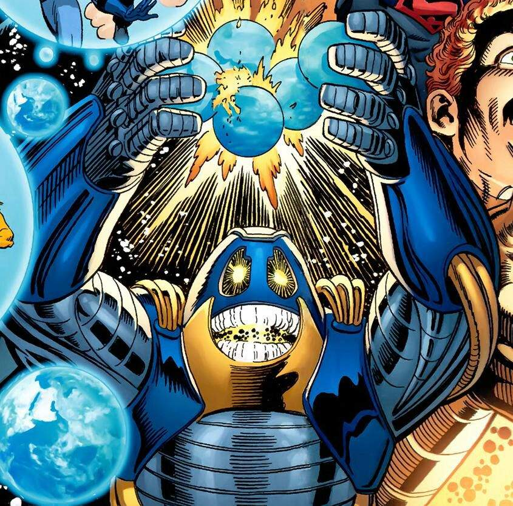

los mas poderosos

The presence
The presence es el creador omnipotente de todas las cosas del multiverso de DC. Solo ha aparecido en un par de ocasiones, pero han sido más que suficientes para comprobar que la vida y el poder mismo comienzan en él

Perpetua
Perpetua era el ser que controlaba todo desde las sombras, con el objetivo de gobernar el multiverso. Ella es la villana definitiva de DC, ya que busca destruir y reconstruir al multiverso según su capricho

Antimonitor
Con la Ecuación Anti-Vida en su cuerpo, Anti-Monitor tiene la capacidad de esclavizar a cualquier ser vivo a su voluntad . Utiliza este poder para unir al Black Racer a Flash, esclavizando al Nuevo Dios y usándolo para matar a Darkseid